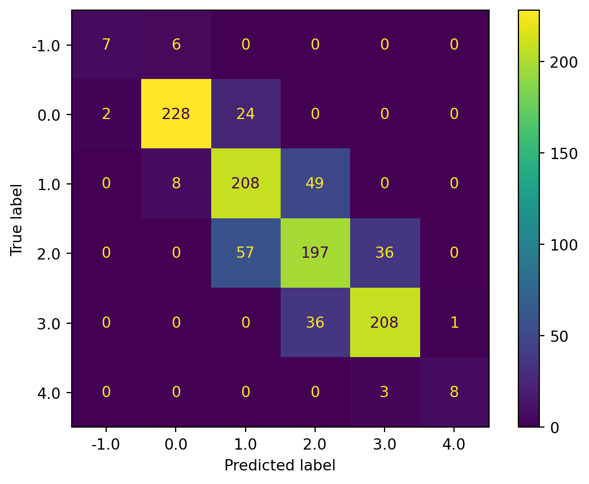
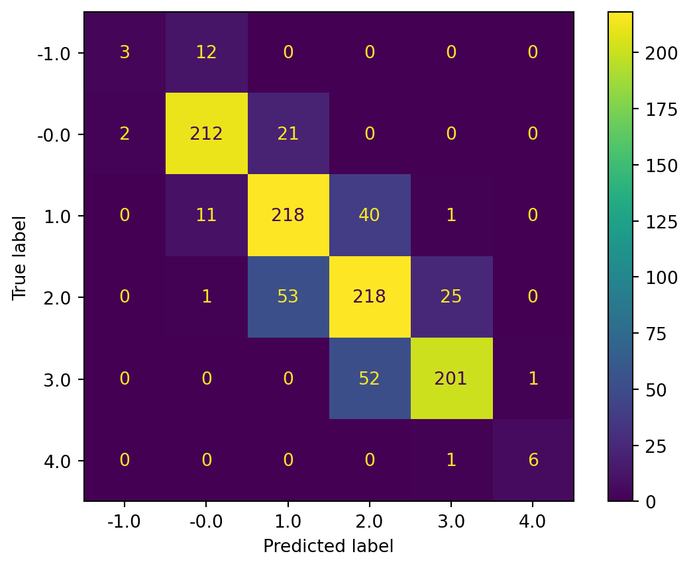
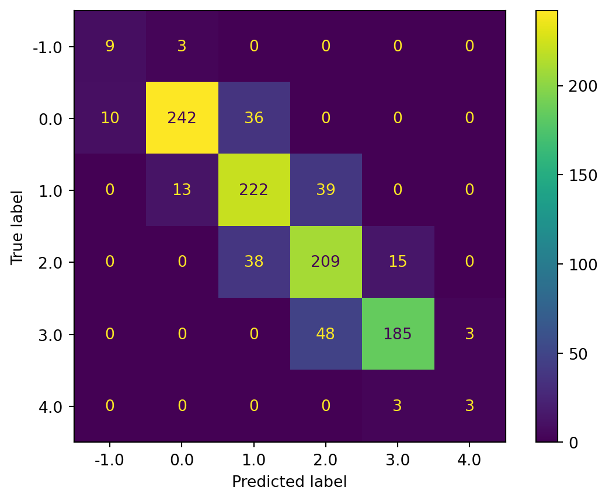

I am using support vector machines(svm) to classifer and preidct the natural population growth rate. In the dataframe, you can see I collect the gdp, year, country, death rate, birth rate, Life expectancy and DALYs (Disability-Adjusted Life Years). SVM used to analyze data for classification and regression analysis. I can tell which factor causes the natural growth rate. After I cleaned up the data and used SVM with Linear kernels, I achieved an accuracy of 92%, which indicates thatMy model can predict the natural population growth rate with an accuracy of 92%. But the accuracy for negative growth rates is only around 70%.
clean data
Code
#LOAD RELEVANT PACKAGESimport pandas as pdimport numpy as npimport matplotlib.pyplot as pltimport seaborn as snsfrom sklearn.metrics import confusion_matrix, ConfusionMatrixDisplayfrom sklearn.model_selection import train_test_splitfrom sklearn.svm import SVCfrom sklearn.metrics import classification_report, confusion_matrix
Code
population = pd.read_csv('../../data/01-modified-data/cleaned-population-py.csv')population.head()
Unnamed: 0
Entity
Year
Natural_growth_rate
GDP
Deaths
Births
Life
Disability
0
0
Afghanistan
2002
3.69
1189.784668
229450
980458.0
56.784
78088.270828
1
1
Afghanistan
2003
3.67
1235.810059
240215
1063246.0
57.271
75103.762176
2
2
Afghanistan
2004
3.61
1200.277954
243367
1097160.0
57.772
73137.361976
3
3
Afghanistan
2005
3.53
1286.793701
241454
1099366.0
58.290
71629.722924
4
4
Afghanistan
2006
3.50
1315.789062
246037
1136774.0
58.826
70807.147852
Code
population = population.drop(columns=['Unnamed: 0'])population = pd.get_dummies(population,columns=['Entity'])population.head()
# Import svc from sklearn.svm and classsification_report, confusion_matrix from sklearn.metrics.# Fit the classfier on the training data and predict on the test data. Set the classifier to be linear and C between 0.35-0.75. svc = SVC(kernel ='linear', C =0.75).fit(X_train, y_train)yp_test = svc.predict(X_test)
Code
# Calculate the confusion matrix and classification report for the train and test data. matrix = confusion_matrix(y_test,yp_test)report = classification_report(y_test, yp_test,output_dict=True)
Code
# Save the results in a data frame. report = pd.DataFrame(report).transpose()
Code
# display the results data framereport
precision
recall
f1-score
support
-1.0
0.625000
0.833333
0.714286
12.000000
0.0
0.989011
0.937500
0.962567
288.000000
1.0
0.930909
0.934307
0.932605
274.000000
2.0
0.874101
0.927481
0.900000
262.000000
3.0
0.939655
0.923729
0.931624
236.000000
4.0
0.750000
0.500000
0.600000
6.000000
accuracy
0.927644
0.927644
0.927644
0.927644
macro avg
0.851446
0.842725
0.840180
1078.000000
weighted avg
0.930127
0.927644
0.928189
1078.000000
Code
# Display Confusion Matrix for the test data. Remember to use the ConfusionMatrixDisplay function.#ConfusionMatrixDisplay(matrix).plot()ConfusionMatrixDisplay.from_predictions(y_test, yp_test)
<sklearn.metrics._plot.confusion_matrix.ConfusionMatrixDisplay at 0x1eba3f3d2d0>
SVM with Polynomial kernels
Code
# Import svc from sklearn.svm and classsification_report, confusion_matrix from sklearn.metrics.# Fit the classfier on the training data and predict on the test data. Set the classifier to be polynomial, C between 0.35-0.75, and degree = 2. svc = SVC(kernel ='poly', C =0.75, degree=2).fit(X_train, y_train)yp_test = svc.predict(X_test)
Code
# Calculate the confusion matrix and classification report for the train and test data. matrix = confusion_matrix(y_test,yp_test)report = classification_report(y_test, yp_test,output_dict=True)# Save the results in a data frame.report = pd.DataFrame(report).transpose()# display the results data framereport
precision
recall
f1-score
support
-1.0
0.473684
0.750000
0.580645
12.000000
0.0
0.937984
0.840278
0.886447
288.000000
1.0
0.735786
0.802920
0.767888
274.000000
2.0
0.699659
0.782443
0.738739
262.000000
3.0
0.911330
0.783898
0.842825
236.000000
4.0
0.500000
0.500000
0.500000
6.000000
accuracy
0.801484
0.801484
0.801484
0.801484
macro avg
0.709741
0.743256
0.719424
1078.000000
weighted avg
0.815226
0.801484
0.805308
1078.000000
Code
# Display Confusion Matrix for the test data. Remember to use the ConfusionMatrixDisplay function.#ConfusionMatrixDisplay(matrix).plot()ConfusionMatrixDisplay.from_predictions(y_test, yp_test)
<sklearn.metrics._plot.confusion_matrix.ConfusionMatrixDisplay at 0x1eba590ace0>

SVM with RBF kernels
Code
# Import svc from sklearn.svm and classsification_report, confusion_matrix from sklearn.metrics.# Fit the classfier on the training data and predict on the test data. Set the classifier to be linear and C between 0.35-0.75. svc = SVC(kernel ='rbf', C =0.75).fit(X_train, y_train)yp_test = svc.predict(X_test)
Code
# Calculate the confusion matrix and classification report for the train and test data. matrix = confusion_matrix(y_test,yp_test)report = classification_report(y_test, yp_test,output_dict=True)# Save the results in a data frame.report = pd.DataFrame(report).transpose()# display the results data framereport
precision
recall
f1-score
support
-1.0
0.473684
0.750000
0.580645
12.000000
0.0
0.937984
0.840278
0.886447
288.000000
1.0
0.746622
0.806569
0.775439
274.000000
2.0
0.702703
0.793893
0.745520
262.000000
3.0
0.911330
0.783898
0.842825
236.000000
4.0
0.500000
0.500000
0.500000
6.000000
accuracy
0.805195
0.805195
0.805195
0.805195
macro avg
0.712054
0.745773
0.721812
1078.000000
weighted avg
0.818720
0.805195
0.808875
1078.000000
Code
# Display Confusion Matrix for the test data. Remember to use the ConfusionMatrixDisplay function.#ConfusionMatrixDisplay(matrix).plot()ConfusionMatrixDisplay.from_predictions(y_test, yp_test)
<sklearn.metrics._plot.confusion_matrix.ConfusionMatrixDisplay at 0x1eba45cb610>

SVM with Sigmoid kernels
Code
# Import svc from sklearn.svm and classsification_report, confusion_matrix from sklearn.metrics.# Fit the classfier on the training data and predict on the test data. Set the classifier to be linear and C between 0.35-0.75. svc = SVC(kernel ='sigmoid', C =0.75).fit(X_train, y_train)yp_test = svc.predict(X_test)
Code
# Calculate the confusion matrix and classification report for the train and test data. matrix = confusion_matrix(y_test,yp_test)report = classification_report(y_test, yp_test,output_dict=True)# Save the results in a data frame.report = pd.DataFrame(report).transpose()# display the results data framereport
precision
recall
f1-score
support
-1.0
0.473684
0.750000
0.580645
12.00000
0.0
0.937984
0.840278
0.886447
288.00000
1.0
0.750000
0.810219
0.778947
274.00000
2.0
0.706081
0.797710
0.749104
262.00000
3.0
0.911330
0.783898
0.842825
236.00000
4.0
0.500000
0.500000
0.500000
6.00000
accuracy
0.807050
0.807050
0.807050
0.80705
macro avg
0.713180
0.747017
0.722995
1078.00000
weighted avg
0.820400
0.807050
0.810638
1078.00000
Code
# Display Confusion Matrix for the test data. Remember to use the ConfusionMatrixDisplay function.#ConfusionMatrixDisplay(matrix).plot()ConfusionMatrixDisplay.from_predictions(y_test, yp_test)
<sklearn.metrics._plot.confusion_matrix.ConfusionMatrixDisplay at 0x1eba5512c20>

conclusion
From all the plot and the matrix above, we can see SVM with Linear kernels has the highest accuracy around 0.92. However for the negative natural bith rate -1 the accuracy is only about 0.7